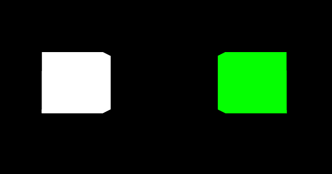
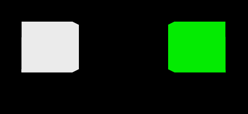
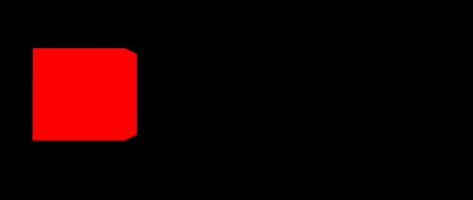
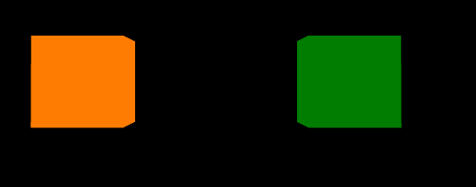
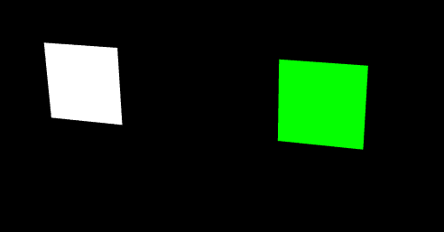
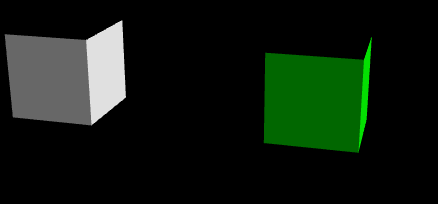
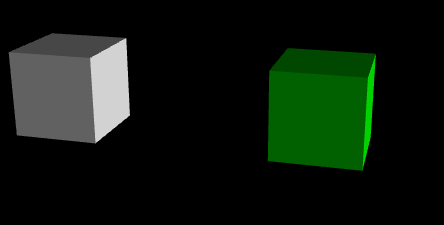
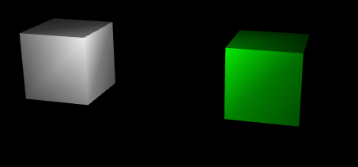
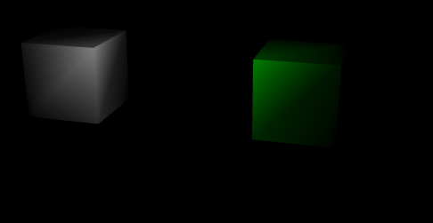
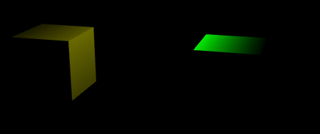

图像渲染要依赖光源，如果没有光，世界就是一片黑暗，即使物体存在，你也看不出来。为了让计算机模拟光照效果，提出了几种不同的光源模型。
- 环境光
- 平行光
- 点光源
- 聚光灯
Three.js中也定义了以上几种光型，有了他们会让3d效果更逼真。
在解释光的问题外，还要先说明下Three.js 中，颜色都是16进制来表示的，白色：0xffffff。
环境光
环境光是指场景整体的光照效果，是由于场景内若干光源的多次反射形成的亮度一致的效果，通常用来为整个场景指定一个基础亮度。因此，环境光没有明确的光源位置，在各处形成的亮度也是一致的。
构造函数
THREE.AmbientLight(hex)
例子
具体例子，创建光源添加到场景中。
1
2
const light = new THREE.AmbientLight(0xffffff);
scene.add(light);
加入两个物体： 白色正方形和绿色正方形，进行光的实验。
1
2
3
4
5
6
7
8
9
10
11
12
13
14
15
16
17
18
19
20
21
22
23
const cube = new THREE.CubeGeometry(200, 200, 200);
const material = (color) => new THREE.MeshLambertMaterial({color: color }));
const greenCube = new THREE.Mesh(cube, material(0x00ff00));
greenCube.position.x = 300;
scene.add(greenCube);
const whiteCube = new THREE.Mesh(cube, material(0xffffff));
whiteCube.position.x = -300;
scene.add(whiteCube);
// 照相机位置：
function initCamera(width, height) {
const camera = new THREE.PerspectiveCamera(45, width / height, 1, 8000);
// camera 位于屏幕外侧1500px的地方，这样可以直接做平面图了。
camera.position.x = 0;
camera.position.y = 0;
camera.position.z = 1500;
camera.lookAt(0, 20, 1);
return camera;
}
白色光源 + 白色正方形和绿色正方形
效果如下：

想让光线暗一些，就把光源变灰一些。
效果如下：

如果光源是红光，看下两个物体的颜色
效果如下：

我们可以看到，绿色的小方块没了（变成黑色的了），原因是，我们能看到物体，都是因为他反射的光，而绿色小方块的红色通道是0，反射不回来内容了，所以我们看到的就是黑色物体了，如果把光源调到带有绿色的，我们可以看到如下效果：
1
2
const light = new THREE.AmbientLight(0xff8800);
scene.add(light);

综上，当我们使用环境光的时候，最好使用白色光与灰色光，其他颜色会导致物体显色奇怪。
平行光
太阳光常常被看作平行光，这是因为相对地球上物体的尺度而言，太阳离我们的距离足够远。对于任意平行的平面，平行光照射的亮度都是相同的，而与平面所在位置无关。
构造函数
THREE.DirectionalLight(hex, intensity)
intensity: 亮度，缺省值为1，表示100%亮度。
对于平行光而言，设置光源位置尤为重要
例子
也是两个小正方形，白色和绿色。与上面的不同，我们调整了照相机的位置：
1
2
3
4
5
6
7
8
9
10
function initCamera(width, height) {
const camera = new THREE.PerspectiveCamera(45, width / height, 1, 8000);
// camera 位于屏幕外侧1500px的地方，这样可以直接做平面图了。
camera.position.x = 500;
camera.position.y = 500;
camera.position.z = 1500;
camera.lookAt(100, 0, 1);
return camera;
}
光源：
1
2
3
light = new THREE.DirectionalLight(0xffffff, 1);
light.position.set(0, 0, 200);
scene.add(light);
说明，光是从z方向处200px的位置向着所有物体照射。 我们可以得到如下图像。

我们调整下光的照射方向：
1 | light.position.set(800, 0, 400); |
说明，光是在x方向800，y方向为0，z方向处400px，与原点连线形成的向量，这个方向形成的光线。 我们可以得到如下图像。

对比下，我们加上y方向的光， light.position.set(800, 200, 400);

点光源
点光源是不计光源大小，可以看作一个点发出的光源。点光源照到不同物体表面的亮度是线性递减的，因此，离点光源距离越远的物体会显得越暗。这里光在每个面上的亮度是不同的，对于每个三角面片，将根据三个顶点的亮度进行插值。
构造函数
THREE.PointLight(hex, intensity, distance)
distance：光源最远照射的距离，缺省值是0。
例子
1
2
light = new THREE.PointLight(0xffffff, 2, 1000);
light.position.set(0, 200, 300);
一个点光源，在坐标(0, 200, 300)位置，进行照射，最远距离1000，结果如下：

当最远距离缩小为500，结果：

聚光灯
聚光灯是一种特殊的点光源，它能够朝着一个方向投射光线。聚光灯投射出的是类似圆锥形的光线，这与我们现实中看到的聚光灯是一致的。
构造函数
THREE.SpotLight(hex, intensity, distance, angle, exponent)
angle：angle是聚光灯的张角，缺省值是Math.PI / 3，最大值是Math.PI / 2
exponent：exponent是光强在偏离target的衰减指数（target需要在之后定义，缺省值为(0, 0, 0)），缺省值是10。
使用聚光灯，一般还要设置target。 如果想让一个物体的运动有灯光跟随，可以将target设置为改对象。
例子
1
2
light = new THREE.SpotLight(0xffff00, 2, 1000, Math.PI /4 , 25);
light.position.set(300, 500, 0);

![微信分享二维码]()